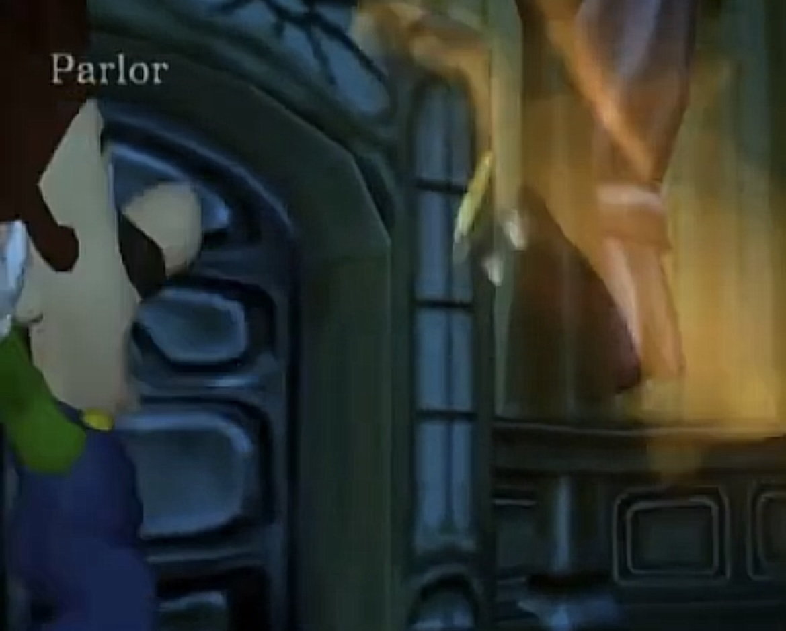

Un héroe asustadizo pero con un gran corazón. Aunque tiembla en la oscuridad, está dispuesto a enfrentar sus miedos con tal de ayudar a sus amigos, equipado con su linterna y su poderosa G-00.

Un perrito fantasma súper juguetón y leal del laboratorio del Profesor Fesor. Tiene una gran curiosidad por los objetos brillantes, haciendo que se pierda en un lugar inimaginable.
En una fría y tormentosa noche, mientras se encontraban cerca del laboratorio,Ectochucho vio algo que le llamo mucho la atencion: era un destello misterioso y cuando lo vio salio disparado hacia una tenebrasa mansion a las afueras, siguiendo el destello.Temblando de miedo pero completamente decidido a buscar a su amigo y encontrarlo, Luigi llega a la mansion, empujando la pesada puerta y se adentra en el vestibulo, donde cada sombra cobra vida
La mansión misteriosa en la tormenta
Rastro brillante del cachorro
La biblioteca principal
Conforme sube al segundo piso, Luigi necesita la ayuda del Profesor Fesor, el cual le da un radar especial para rastrear indicios fantasmales en la zona
Guiado por el brillo de las últimas huellas, Luigi atraviesa un pasillo secreto, que lo lleva hasta la biblioteca principal
Dentro de la biblioteca por fin encuentra a Ectochucho, divirtiendose juntos otraven mientras juegan con un libro flotante. Con un suspiro de alivio y una gran sonrisa por reencontrarse con su mascota, Luigi abraza fuertemente a su compañero de aventuras, poniendo asi el fin a esta escalofriante pero memorable aventura.